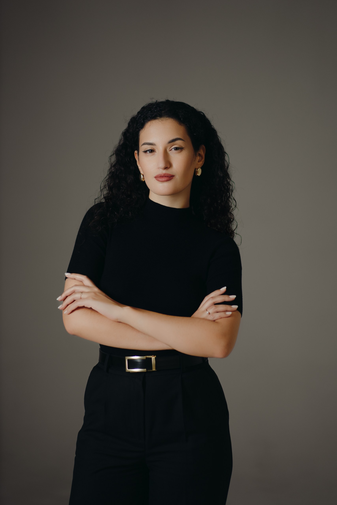
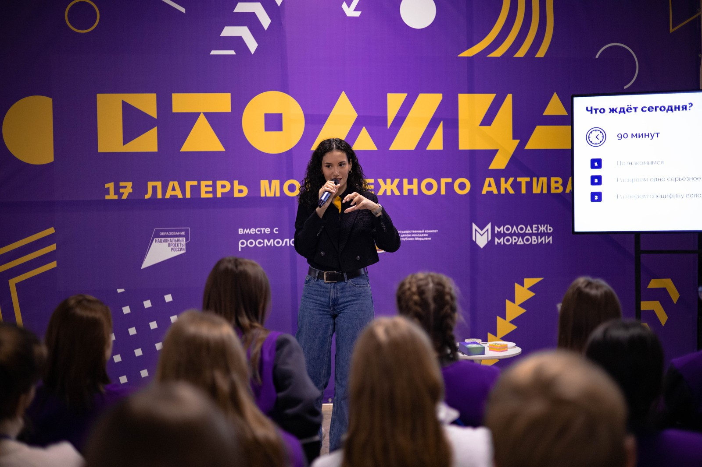
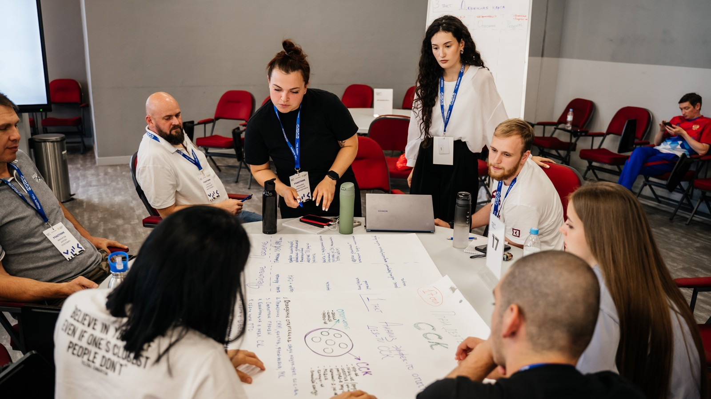
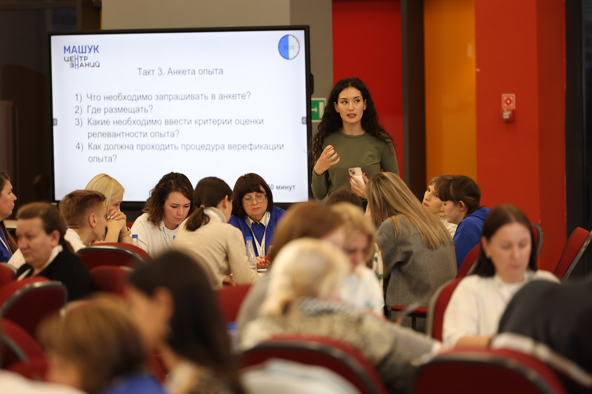
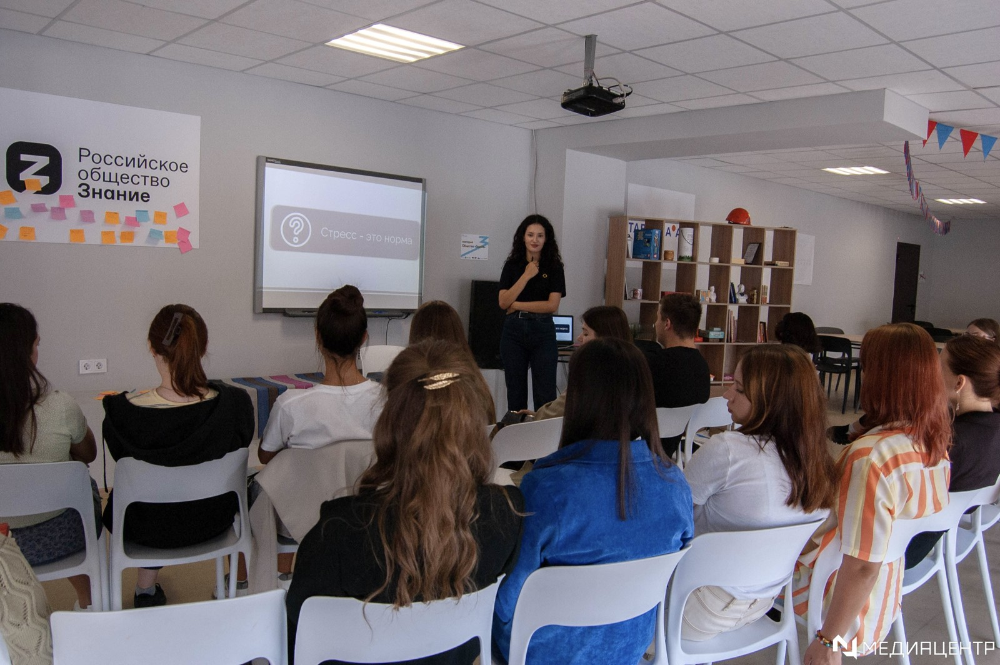
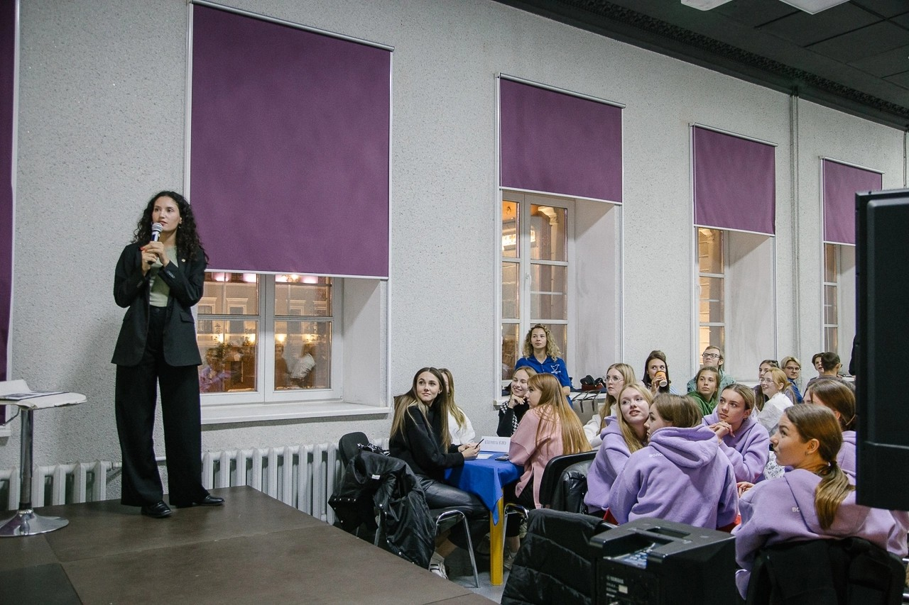
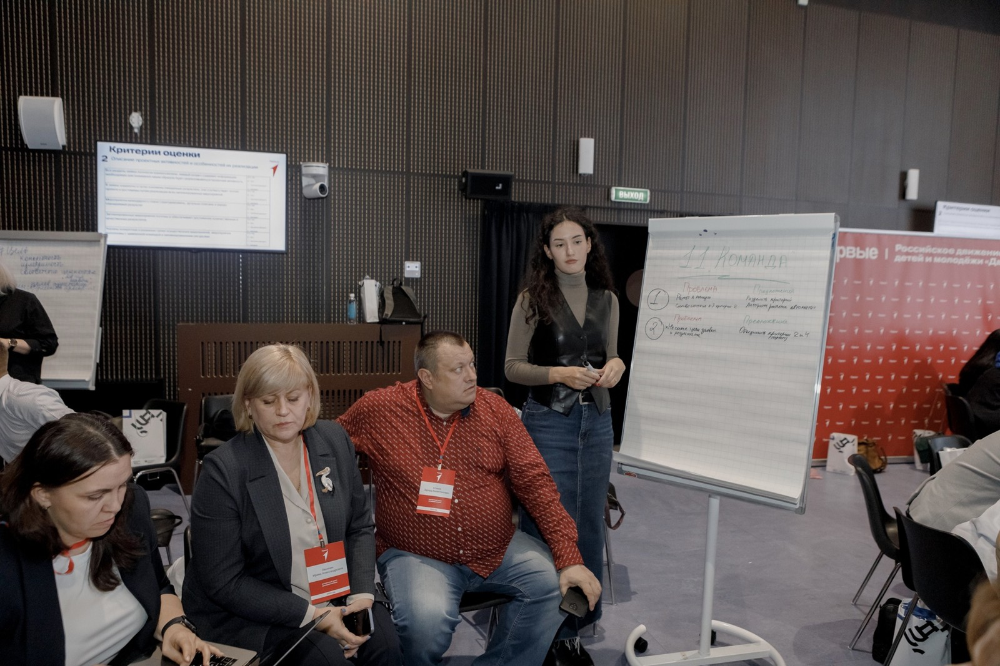
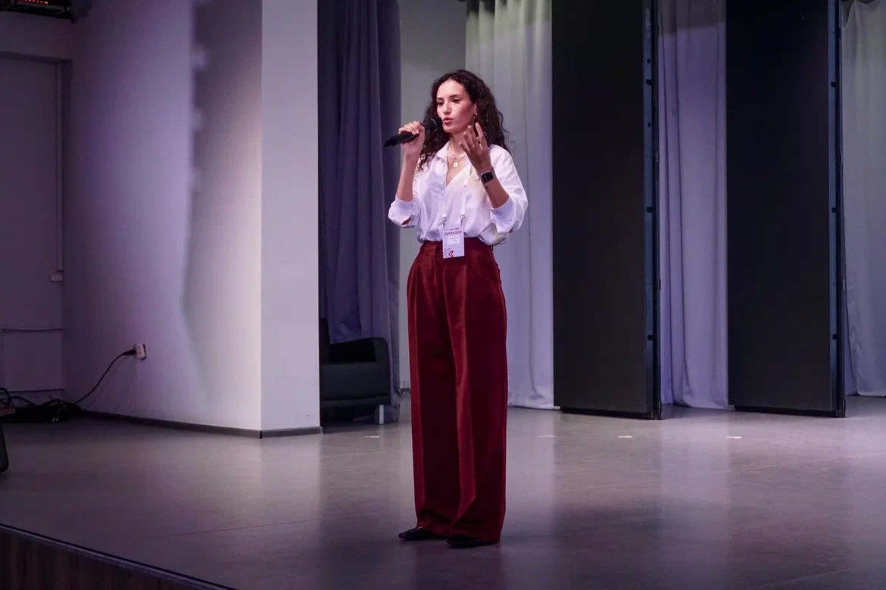

3 → 1мес.
Сокращение срока выхода нового
сотрудника на продуктивность

Learning & Talent
Development Manager
За последние два года разработала и внедрила 7 HR-продуктов: от адаптации и кадрового резерва до единой цифровой HR-платформы.
В «Мосволонтёре» сформировала направление Learning & Development с нуля — для организации с 200+ сотрудниками и 40 подразделениями.
Сокращение срока выхода нового
сотрудника на продуктивность
ESI процесса адаптации
вместо 69%
HR-процесса автоматизированы
в единой среде
Избранные проекты
2023 — настоящее время
Более 3 лет на стыке бизнеса, обучения и HR.
Проектирую образовательные решения, развиваю руководителей и сотрудников, внедряю цифровые HR-инструменты. Федеральный тренер Ассоциации тренеров РСМ, фасилитатор и модератор стратегических и образовательных сессий.
Познакомиться в Telegram ↗






Learning & Talent Development Manager
Развитие талантов, HR-продукты и цифровизация. Организация: 200+ сотрудников, 40 подразделений.Федеральный тренер
40+ образовательных программ, 1500+ участников. Фасилитация и модерация сессий.Менеджер деловой программы
Организация и сопровождение 300+ образовательных мероприятий, работа со спикерами и партнёрами.Продюсер образовательных программ
Образовательные продукты и федеральные проекты. 15 мероприятий, включая федеральные и международные форумы.Бизнес-тренер
Разработка и проведение корпоративных программ по коммуникациям и клиентскому сервису для компании с 1500+ сотрудниками. Участие в развитии системы адаптации.Московский институт психоанализа · Магистратура
Eduson
ШУМ
Московский институт психоанализа
Русская школа управления
Воронежский государственный университет инженерных технологий · Бакалавриат
РСМ
Ростелеком
Ростелеком
«Прометей»
Ассоциация тренеров РСМ
IX Конкурс Молодёжного Правительства